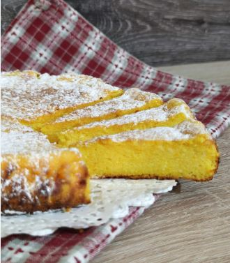
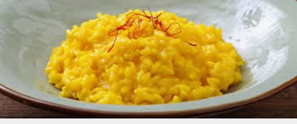
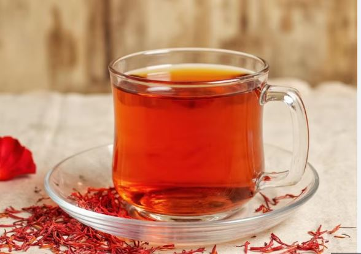

Șofranul
Aurul roșu al gastronomiei
Istoric și origine
Șofranul, derivat din floarea de Crocus sativus, este cel mai scump condiment din lume. A fost cultivat pentru prima dată în Grecia, dar astăzi Iranul este cel mai mare producător mondial.
Pentru a obține un singur gram de șofran uscat, sunt necesare aproximativ 150 de flori. Procesul de recoltare este extrem de delicat și se face manual.

Utilizări culinare
Șofranul este renumit pentru culoarea sa galben-aurie vibrantă și aroma sa distinctă, ușor metalică și dulceagă.


